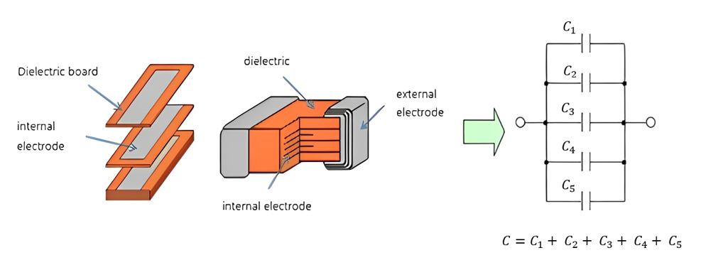
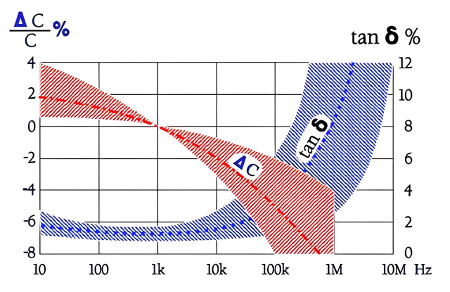
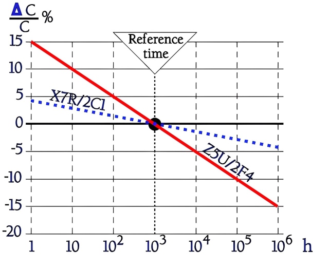
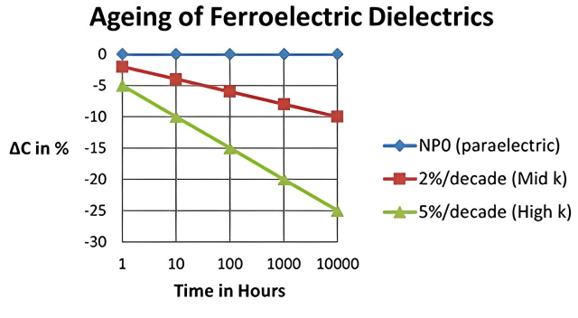

Capacitor Handbook Chapter(2)#
Author : kourosh arfae shahidi
gmail : kourosh.a.shahidi@gmail.com
Introduction to Ceramic Capacitors#
Ceramic capacitors are essential components in modern electronic systems, widely recognized for their versatility and efficiency. They rely on ceramic materials as the dielectric, which determines their ability to store and regulate electric charge. The dielectric properties significantly influence factors such as capacitance, stability, and frequency response, making these capacitors suitable for a range of applications, from simple circuits to advanced high-frequency systems. By combining compact design with reliable performance, ceramic capacitors play a pivotal role in shaping contemporary electronics.
Types of Ceramic Capacitors#
The value for K comes from the selection of materials and from the geometric arrangement of individual component parts.
Single-Plate Ceramic Capacitors#
There is one form of ceramic which looks almost exactly like the classical model of a parallel plate capacitor. A square or circular shaped ceramic dielectric is prepared and coated with conductors on each flat face as shown in figure below.

Capacitance#
If the value of K is known for the dielectric, measure the area of the conductors, the thickness of the dielectric, and directly calculate the capacitance.

\(C = \frac{k\epsilon A}{d}\)
Manufacturing#
In commercial practice, the dielectric is made from finely powered materials, chief of which is barium titanate (K = 1000 to 3000). Disc elements are pressed in dies and then fired at high temperature to produce a very dense structure. Electrodes for both discs and single-plates are formed from a compound containing powered silver, powered glass, and an organic binder. This material is screen printed onto the discs or onto the sheets from which the single plates will be cut. Another firing step removes the binder and melts the glass, binding the silver glass matrix to the ceramic surfaces.
The outer surface is easily solderable, and wires are usually attached in a radial configuration. The hairpin-shaped wires shown in figure below are springy enough to hold the ceramic elements while the assembly is dipped in solder. The lower end of the hairpin is cut off later. This process can be mechanized readily, and dipped discs are among the cheapest capacitors available.

Negative Point#
Hazard of Bridging in ceramic capacitors refers to the risk where the conductive material of the electrodes may extend to the edges of the dielectric, creating a short circuit between the positive and negative electrodes. This issue primarily occurs in Single-plate capacitors, where electrodes are applied as conductive layers on the dielectric surface. If the conductive material is not precisely confined or extends close to the edges, the likelihood of bridging increases. Other contributing factors include manufacturing errors, mechanical stress, and moisture accumulation, which can facilitate ion migration. This hazard is typically mitigated by removing conductive material from the edges or using advanced designs like multilayer ceramic capacitors (MLCC).
Multilayer Ceramic Capacitors (MLCC)#
Structure#
A much more sophisticated design is called the “monolithic” ceramic capacitor, and it offers much higher capacitance per unit volume. these capacitors have a multilayer structure where thin layers of ceramic dielectric are alternated with conductive electrodes, typically made of silver or metal alloys. These layers are precisely stacked and undergo a compression and sintering process to form a single, unified structure known as a monolithic design.
The ceramic material acts both as dielectric and as encapsulant of the basic element Electrodes
are buried within the ceramic and exit only on the ends. The ends are surrounded with a type of powdered silver-glass compound .
Figure below shows only two electrodes, but 20 or 30 electrodes are very common in commercial practice and 60 or 80 might be used to obtain larger values of capacitance.

Capacitance#
Figure below illustrates the use of three electrodes. The addition of the third electrode has doubled the value of capacitance because of the two layers of the dielectric. The equation for capacitance may be modified by the addition of the term, N, to indicate the number of layers of dielectric in use. The thickness of the layer represents the plate separation, D, in the equation, while the area, A, is the area of dielectric which appears between opposing electrodes. The dimension, L, shown in Fig below is representative of this area; the remainder of the electrode length does not face electrodes of opposing polarity, and these portions of the electrodes act only as conductors to the outside world.

\(C = \epsilon \times K \times \frac{A}{D} \times N\)
Manufacturing#
The manufacturing process for monolithic ceramic capacitors is much more complicated and sophisticated than that needed for discs or single plates. The powered ceramic material are mixed with a binder and cast on moving belts into thin flexible sheets which are wound onto reels and stored. The sheets are then printed with electrode patterns. The “ink” used in this printing is pigmented with finely divided precious metals, usually chosen from among platinum, palladium, and gold. Precious metals are necessary because the electrodes must pass through the firing kiln (above + lOOO°C) along with the ceramic, and an oxidizing atmosphere must be maintained in the kiln to develop the desired ceramic properties. The use of precious metal electrodes represent a major cost element in making monolithic ceramic capacitors.
After the ink is dried, pieces of the sheet are stacked above one another, each piece representing one dielectric layer. Figure below shows the electrode patterns are printed so that alternating electrodes exit from opposite ends. Finally, cover layers which do not bear electrodes are placed on top and bottom. The whole assembly is compressed and then fired. During firing, the ceramic sinters together into one homogeneous structure from which we get the name “monolithic”.

The volumetric efficiency of ceramics from the high values of K which are possible. This result is in contrast with tantalum dielectrics and other electrolytics which gain efficiency primarily from very close spacing of electrodes. A 50 Volt ceramic dielectric, for example, would be about 60 times as thick as a 50 Volt tantalum oxide dielectric.
Dielectric Classes#
Basic to the ceramic capacitor are the properties of the dielectric materials. There are many dielectric formulations in use to obtain special characteristics of the finished capacitors. In general, stability of capacitance with respect to temperature and voltage are sacrificed when large values of K are sought. While many special formulations are sold, the industry is concentrating on three temperature compensating areas: stable (NPO or COG), semi stable (X7R), and general purpose (Z5U).
NPO/COG capacitors are highly stable, exhibiting minimal changes in capacitance across temperature, voltage, and frequency variations, making them ideal for precision and high-reliability applications. X7R capacitors are semi-stable, offering a good balance between capacitance and moderate stability, with small deviations in capacitance under varying temperatures, making them suitable for general electronics. Z5U capacitors, on the other hand, are general-purpose components with high capacitance but significant variations in capacitance due to changes in temperature and voltage, making them better suited for non-critical, stable environments.
Multilayer ceramic capacitors are available in a wide range of operating characteristics. Electronic Industries Association (EIA) and the military have established categories to help divide the basic characteristics into easily specified classes. The basic industry specification for ceramic capacitors is EIA specification RS-198 and as noted in the general section it specifies temperature compensating capacitors as Class 1 capacitors. These are specified by the military under specification MIL-C-20. General purpose capacitors with non-linear temperature coefficients are called Class 2 capacitors by EIA and are specified by the military under MIL-C-l1015 and MIL-C-39014. The high reliability military specification, MIL-C-123 covers both Class 1 and Class 2 dielectrics.
Class 1#
Temperature compensating capacitors are called Class 1 capacitors.They offer the highest performance in terms of stability and loss. They can provide accurate high tolerance capacitors with stable voltage and temperature coefficients. They also offer low losses and are therefore suitable for use in oscillators, filters and the like.
They are usually made from mixtures of titanates where barium titanate is normally not a major part of the mix. They have a predictable temperature coefficient (TC), and in general, do not have an aging characteristic. Thus, they are the most temperature stable capacitor available. The TC’s of Class 1 temperature compensating capacitors are usually NPO (negative-positive 0 ppmfC). Other Class 1 extended temperature compensating capacitors are also manufactured in TC’s from PlOO through N2200.

Class 1 capacitor codes#
To define the performance of a ceramic capacitor dielectric a three character code is used which is specific to ceramic capacitor class 1 dielectrics.
The first character is a letter which gives the significant figure of the change in capacitance over temperature in ppm/°C
The second character is numeric and gives the multiplier
The third character is a letter and gives the maximum error in ppm/C

Class 2#
General purpose ceramic capacitors are known as Class 2 capacitors and have become extremely popular because of the high capacitance values available in very small size. Class 2 capacitors are “ferro-electric” and vary in capacitance value under the influence of the environmental and electrical operating conditions. Class 2 capacitors are affected by temperature, voltage (both AC and DC), frequency and time.
Effects of Temperature#
Temperature effects for Class 2 ceramic capacitors are exhibited as non-linear capacitance changes with temperature. In specifying capacitance change with temperature for Class 2 materials, EIA expresses the capacitance change over an operating temperature range by a 3 symbol code.
The first symbol represents the cold end of the temperature range.
The second represents the upper limit of the operating temperature range.
The third symbol represents the capacitance change allowed over the operating temperature range.
detailed explanation of the EIA system is provided in figure below :

The Curie temperature#
Ceramic capacitors have a crystalline structure and dipoles that give the materials their unique dielectric constants εr. But above a certain brittle transition temperature, the so-called Curie temperature, the ceramic loses its dielectric properties. The Curie temperature for Class 2 ceramics usually is situated between 125⋅⋅⋅150 °C. The influences don’t occur at any exact switch temperature but make themselves gradually discernible in the vicinity of the Curie temperature. Thus, we should rather talk of the Curie range.
Effects of Voltage#
Barium titanate is a widely used material in Class 2 ceramic capacitors. It possesses high dielectric properties and responds effectively to various voltage levels.The crystalline structure of barium titanate consists of electric dipoles. These dipoles polarize under the influence of an external electric field, determining the dielectric behavior of the capacitor.

When the voltage increases from zero to a limit value and then decreases, the charging curve follows another branch that at the voltage V = 0 leaves a residual charge + ΔQ. An alternating voltage of the same magnitude will force the charging curve along the outlines of the large hysteresis loop in the figure.
If the alternating voltage is small and the DC voltage = 0, the hysteresis loop will follow the small oval in the center of the figure. Small voltage changes correspond to large charge changes, i.e. to a high capacitance. But if we superimpose a small alternating voltage on a considerable DC voltage we see how ΔV1 corresponds to fainter charge changes ΔQ1. The capacitance has dropped.
Dielectric Hysteresis Phenomenon: Dielectric hysteresis is similar to magnetic hysteresis. When an electric field is applied and then removed, the dipoles do not immediately return to their original state, leaving a residual charge (ΔQ). this behavior, known as dielectric hysteresis, reflects the stability or locking of charges in ferroelectric materials.
Effects of Frequency#
Frequency affects capacitances and dissipation factor. Variation of impedance with frequency is a very important consideration for decoupling capacitor applications. Lead length, lead configuration and body size all affect the impedance level over more than ceramic formulation variations.

Capacitance (ΔC/C) :
At low frequencies: The capacitance remains relatively stable and is slightly below its nominal value. This means the capacitor performs well in this range and effectively stores energy.
As frequency increases (above 10 kHz): The capacitance decreases. At very high frequencies (1 MHz and beyond), it drops to a minimum. This happens because the dielectric material inside the capacitor cannot respond efficiently to the rapid changes in the electric field.
Energy Losses (tanδ) :
At low frequencies (10 Hz to a few kHz): Energy losses are very low, meaning the capacitor dissipates minimal energy as heat and operates with high efficiency.
As frequency increases (beyond a few kHz): Energy losses rise significantly. At very high frequencies, the capacitor dissipates a large amount of energy as heat, reducing its efficiency.
Effects of Time#
Class 2 ceramic capacitors change capacitance and dissipation factor with time as well as temperature, frequency, and voltage. This change with time is known as aging.
Aging : This term refers to the exponential decrease in capacitance and dissipation factor over time, caused by the gradual re-alignment of the crystalline structure of the ceramic material.

In the diagram the capacitance of the Z5U ceramic decreases with approximately 6% per time decade and of the X7R ceramic with approximately 1.3%. Typical aging constants usually are :
BX/X7R/2C1 1⋅⋅⋅2%
Z5U/2F4 3⋅⋅⋅6%.
De-aging: refers to the process of reversing the natural aging of a Class 2 ceramic capacitor. de-aging occurs when the capacitor is heated above its Curie Point, which is the temperature at which the crystalline structure of the ceramic material temporarily resets.
If a ceramic capacitor remains unused for a period of time, its capacitance and dissipation factor naturally decrease due to the process known as aging. However, if the capacitor is heated above its Curie Point (e.g., 125°C for 4 hours or 150°C for half an hour), this aging process is reversed, a phenomenon referred to as De-aging. After undergoing De-aging, the capacitor returns to its initial capacitance and dissipation factor values.
Immediately following De-aging, the capacitance changes rapidly. For accurate measurements, manufacturers typically wait for a stabilization period, commonly 24 hours, after the “last heat” treatment. Various factors, such as the application of high voltages or environmental stresses, can influence the capacitor’s performance and alter its aging curve. These effects are anticipated in military specifications (MIL standards), which allow for changes in capacitance after tests like temperature cycling or moisture resistance. Re-measurements are conducted after a defined time interval to account for these changes.

Effects of Mechanical Stress#
High K dielectric ceramic capacitors exhibit some low level piezoelectric reactions under mechanical stress. As a general statement, the piezoelectric output is higher, the higher the dielectric constant of the ceramic. It is desirable to investigate this effect before using high K dielectrics as coupling capacitors in extremely low level application.
Application#
Ceramic capacitors are primarily designed for us.e where a small physical size with comparatively large electrical capacitance and high insulation resistance is required. Ceramic capacitors are substantially smaller than paper of mica units of the same capacitance and voltage rating.
General purpose ceramic capacitors are not intended for precision applications but are suitable for use as bypass, filter, and noncritical coupling elements in high frequency circuits where appreciable changes in capacitance, caused by temperature variations, can be tolerated.
Temperature compensating capacitors#
Temperature compensating ceramic capacitors are ideally suited for applications that demand controlled capacitance change with temperature variation, such as resonant circuit applications. The high capacitance in smaller packages with high reliability provides volumetric efficiency and is well-suited for automatic assembly (tape and reel).
These capacitors are suitable solutions for applications requiring:
High Q and frequency stability with excellent retrace characteristics
Very predictable temperature coefficients
Capacitors unaffected by voltage, frequency, or time
A dielectric material that is not ferro-electric
The most stable capacitor type available
Temperature compensating capacitors are recommended for use in frequency determining circuits. Typical applications include oscillator, radio frequency (RF), and intermediate frequency (IF) circuits. Frequency drift due to temperature effects can be compensated individually in each circuit.
In IF stages where the frequency variation is uniform, satisfactory operation can be obtained by designing the temperature-compensating capacitor into the oscillator circuit.
In RF circuits tuned by a variable capacitor, a shunt compensating capacitor of low value and high compensating characteristics may be used.
Conclusion#
Ceramic capacitors, due to their unique features such as high capacitance in compact sizes, thermal and frequency stability, and low production cost, have become essential components in electronic circuit design. Their structure, whether single-plate or multilayer, plays a significant role in enhancing performance and increasing capacitance. The study of Class 1 and Class 2 capacitors reveals that the dielectrics used, particularly high-K materials, have a direct impact on their behavior. Environmental factors such as temperature, frequency, and voltage significantly influence their capacitance and dissipation factor. Additionally, specific phenomena like aging and piezoelectric properties in certain dielectrics affect their performance in sensitive applications. This research emphasizes that a deep understanding of the structure, dielectrics, and external factors is vital for the proper selection and design of ceramic capacitors in various circuits.